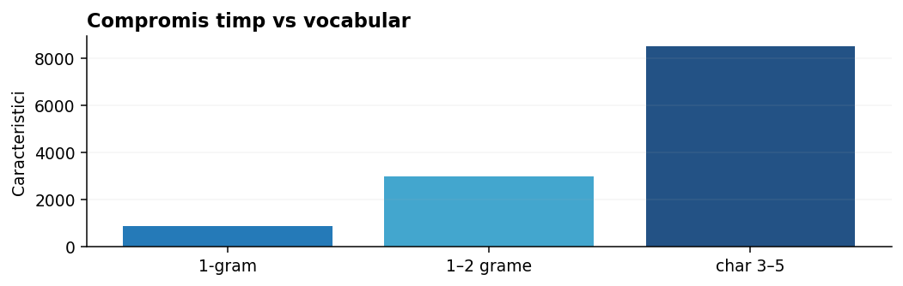

Ghid scikit-learn pentru NLP: parametri și combinații
Referință comparativă pentru alegerea vectorizatorului și a modelului.

Cum alegem o configurație de pornire
Pentru clasificare de mesaje scurte: TfidfVectorizer(ngram_range=(1,2), min_df=1) plus LogisticRegression(max_iter=1000). Pentru greșeli frecvente de tastare: testează analyzer="char_wb", ngram_range=(3,5) cu LinearSVC. Pentru frecvențe interpretate de Naive Bayes: CountVectorizer plus MultinomialNB.
Acestea sunt ipoteze de experiment, nu rețete universal optime. Compară-le folosind aceeași validare și metrica potrivită.
Interacțiunea dintre parametri
La un corpus mic, min_df=5 poate elimina majoritatea termenilor și poate face vectorizarea imposibilă; la corpus mare poate reduce zgomotul. max_df=0.8 elimină termeni prezenți în mai mult de 80% din documente, dar poate șterge termeni importanți pentru domeniul dat.
Într-o problemă cu clase dezechilibrate, class_weight="balanced" la un model liniar poate ajuta, dar poate afecta precision și probabilitățile. Verifică trade-off-ul față de metrica evaluată.
Modelul potrivit pentru dimensiunea datelor
MultinomialNB este rapid și simplu; LogisticRegression are coeficienți interpretabili și probabilități; LinearSVC este un baseline foarte bun pentru matrici rare; SGDClassifier permite antrenare incrementală; TruncatedSVD reduce dimensiunea, dar poate pierde informații.
La antrenarea Naive Bayes nu este obligatoriu TF-IDF; la clasificarea textelor, comparația Count/TF-IDF este adesea primul experiment important.
Regula de aur pentru parametri
Stabilește întâi ce problemă rezolvi și cu ce metrică, apoi alege o configurație de bază. Schimbă o familie de parametri pe rând, păstrează același split și notează impactul asupra performanței.
Mai multe iterații GridSearchCV nu repară etichete greșite, date insuficiente ori o împărțire contaminată între antrenare și validare.
Exemple Python explicate
Codul de mai jos este independent de celelalte exemple dacă nu se precizează altfel. Experimentează schimbând datele, apoi compară rezultatele.
Exemplul 1. Trei pipeline-uri alternative
from sklearn.pipeline import Pipeline from sklearn.feature_extraction.text import CountVectorizer, TfidfVectorizer from sklearn.naive_bayes import MultinomialNB from sklearn.linear_model import LogisticRegression from sklearn.svm import LinearSVC modele = { "numărări+NB": Pipeline([("vec", CountVectorizer()), ("clf", MultinomialNB(alpha=1.0))]), "tfidf+LR": Pipeline([("vec", TfidfVectorizer(ngram_range=(1, 2))), ("clf", LogisticRegression(max_iter=1000))]), "caractere+SVC": Pipeline([("vec", TfidfVectorizer(analyzer="char_wb", ngram_range=(3, 5))), ("clf", LinearSVC(C=1.0))]), } print(list(modele))
Parametri scikit-learn: ce modifică, când îi folosim și la ce să fim atenți
Valorile sunt puncte de pornire pentru experimente controlate. În toate cazurile, alegerea finală se bazează pe setul de validare, nu pe accesarea repetată a testului final.
| Clasă | Parametru | Valori | Utilizare | Limitări și combinații |
|---|---|---|---|---|
CountVectorizer | lowercase | True / False | True pentru texte cu majuscule neinformative; False când majusculele contează | Poate uni acronime cu termeni obișnuiți. |
CountVectorizer | analyzer | "word", "char", "char_wb" | word pentru cuvinte; char_wb pentru variații ortografice | Token_pattern și stop_words se aplică în principal analizei pe cuvinte. |
CountVectorizer | token_pattern | r"(?u)\b\w\w+\b" | Modifică la r"(?u)\b\w+\b" dacă vrei și termeni de o literă | Ignored când se folosește tokenizer personalizat ori analyzer diferit de word. |
CountVectorizer | ngram_range | (1,1), (1,2), (3,5) | (1,2) pentru negări locale; (3,5) cu analyzer char | Un interval mare crește masiv vocabularul. |
CountVectorizer | min_df | 1, 2, 5 sau fracții | 1 pe corpus foarte mic, 2+ pe colecții cu zgomot | Un prag mai mare poate elimina nume rare esențiale. |
CountVectorizer | max_df | 1.0, 0.9, 0.8 | 0.8–0.95 când există mulți termeni generici | Poate elimina termeni foarte importanți pentru sarcină. |
CountVectorizer | max_features | None, 10000, 50000 | Limitează memoria și timpul când corpusul este mare | Păstrează termenii cei mai frecvenți, nu neapărat cei mai discriminativi. |
CountVectorizer | binary | False / True | True când contează prezența, nu frecvența | Se pierde informația despre repetiții. |
TfidfVectorizer | use_idf | True / False | True când termenii foarte comuni trebuie să aibă pondere redusă | False transformă ponderarea spre TF normalizat. |
TfidfVectorizer | smooth_idf | True / False | True pentru o convenție stabilă cu netezire | Atenție la formula exactă folosită în calculele manuale. |
TfidfVectorizer | sublinear_tf | False / True | True când documente cu repetiții excesive domină | Aplică 1+log(TF) pentru frecvențe nenule. |
TfidfVectorizer | norm | "l2", "l1", None | l2 pentru compararea cosinus a documentelor | None păstrează mărimi dependente de lungimea textului. |
TfidfVectorizer | strip_accents | None, "unicode", "ascii" | unicode pentru texte cu/fără diacritice amestecate, după validare | Poate pierde distincții lingvistice. |
HashingVectorizer | n_features | 2**18, 2**20 | Mai mare → coliziuni mai rare, memorie mai multă | Nu poți recupera simplu numele termenilor. |
HashingVectorizer | alternate_sign | True / False | False când urmează MultinomialNB (cere date nenegative) | True poate introduce valori negative prin semne alternante. |
TruncatedSVD | n_components | 50, 100, 300 | Alege prin validare și constrângeri de memorie | Dimensiune prea mică poate șterge informații relevante. |
TruncatedSVD | n_iter | 5, 7, 10 | Mai multe iterații pot îmbunătăți aproximarea | Costul calculului crește. |
KMeans | n_clusters | 2, 5, 10 | Alege după obiectiv, silhouette și interpretare | Nu coincide obligatoriu cu numărul de clase semantice. |
KMeans | init | "k-means++", "random" | k-means++ este o inițializare robustă de pornire | Rezultatul poate depinde de inițializare. |
KMeans | n_init | 10, "auto" | 10 pentru rulări multiple explicite, reproductibile | Cu auto, numărul de rulări depinde de init în versiunile curente. |
KMeans | max_iter | 100, 300 | 300 suficient adesea pentru baseline | Prea puține iterații pot opri învățarea prematur. |
KMeans | random_state | 0, 42 | Fixează seed-ul pentru comparații corecte | Nu trebuie ales după testul final. |
MiniBatchKMeans | batch_size | 256, 1024 | Util pe corpusuri mai mari când timpul contează | Soluția poate fi mai aproximativă. |
NMF | n_components | 2, 5, 10 | Numărul temelor latente, ales prin interpretare/validare | Temele prea multe pot deveni fragmentate. |
NMF | init | "nndsvda", "random" | nndsvda pentru multe aplicații educaționale | Pentru inițializare random fixează random_state. |
NMF | solver | "cd", "mu" | cd pentru obiectivul Frobenius implicit | Unele beta_loss cer solver mu. |
NMF | max_iter | 200, 500 | Crește când apar avertizări de neconvergență | Nu repară alegerea greșită a numărului de teme. |
NMF | alpha_W, alpha_H | 0.0, 0.01 | Controlează regularizarea factorilor W și H | Prea multă regularizare poate distruge temele. |
NMF | l1_ratio | 0.0…1.0 | 0 → penalizare L2, 1 → L1, valori intermediare mix | Influențează sparsitatea componentelor. |
LatentDirichletAllocation | n_components | 2, 5, 10 | Numărul de teme, de explorat | Nu interpretăm automat ID-ul temei ca etichetă. |
LatentDirichletAllocation | learning_method | "batch", "online" | online pentru corpusuri mai mari | Online depinde de batch_size și rata de actualizare. |
LatentDirichletAllocation | max_iter | 10, 20 | Crește dacă rezultatele sunt instabile | Rezultatele depind de date și seed. |
LatentDirichletAllocation | random_state | 0, 42 | Reproductibilitatea modelării tematice | Nu asigură echivalența interpretării pe corpusuri diferite. |
MultinomialNB | alpha | 0.1, 1, 2 | 1 este baseline Laplace, ajustează prin CV | 0 poate cauza estimări nule ori instabilitate. |
MultinomialNB | fit_prior | True / False | True învață frecvențele claselor, False le face uniforme | Alegerea schimbă comportamentul pentru clase dezechilibrate. |
MultinomialNB | class_prior | None sau probabilități | Folosește doar dacă ai motive să fixezi priori | Nu inventa priori din etichetele testului. |
BernoulliNB | binarize | 0.0, None | 0.0 transformă orice valoare >0 în prezență | Binarizarea poate pierde frecvențele utile. |
BernoulliNB | alpha | 0.1, 1.0 | Netezirea probabilităților | Valori foarte mici pot fi instabile. |
LogisticRegression | C | 0.01, 0.1, 1, 10 | C mic → regularizare mai puternică, util pentru overfit | C mare poate produce coeficienți instabili. |
LogisticRegression | max_iter | 300, 1000, 2000 | Crește dacă apare avertisment de neconvergență | Nu este un parametru care adaugă automat acuratețe. |
LogisticRegression | solver | "lbfgs", "saga" | lbfgs este un punct de plecare; saga pentru alte penalizări și multe caracteristici | Compatibilitatea solver–penalizare depinde de versiune. |
LogisticRegression | class_weight | None, "balanced" | balanced când clasa rară e importantă și validarea o justifică | Poate reduce precision pentru clasa rară. |
LinearSVC | C | 0.1, 1, 10 | C mic regularizează mai puternic | Scorurile decision_function nu sunt probabilități. |
LinearSVC | loss | "squared_hinge", "hinge" | squared_hinge este frecvent implicit | Compatibilitatea cu penalty/dual trebuie verificată. |
LinearSVC | class_weight | None, "balanced" | Compară pentru clase dezechilibrate | Influențează separarea, nu doar pragul final. |
SGDClassifier | loss | "hinge", "log_loss" | hinge pentru clasificare de tip SVM; log_loss pentru probabilități | Cu hinge nu primești direct predict_proba. |
SGDClassifier | alpha | 1e-4, 1e-3, 1e-5 | Controlul regularizării; testează pe scală logaritmică | În SGDClassifier alpha influențează și rata de învățare pentru unele schedule-uri. |
SGDClassifier | max_iter | 1000, 2000 | Controlul numărului de epoci | Setările tol/learning_rate influențează convergența. |
OneVsRestClassifier | estimator | model binar | Multi-label și multiclasă în formulări OvR | Etichetele multi-label trebuie furnizate în forma corectă. |
Ridge | alpha | 0.1, 1, 10 | Regresie din text; alpha mai mare → coeficienți mai regularizați | Evaluarea folosește MAE/RMSE, nu F1. |
GridSearchCV | param_grid | dict de liste | Explorează configurații discrete selectate cu justificare | Încercarea tuturor combinațiilor poate fi costisitoare. |
GridSearchCV | scoring | "f1_macro", "accuracy", "neg_mean_absolute_error" | Alege metrica evaluată de concurs | Scorurile neg_* maximizează negativul erorii. |
GridSearchCV | cv | 3, 5 sau StratifiedKFold | Stratificat pentru clasificare în condiții obișnuite | La duplicate/grupuri comune trebuie un CV bazat pe grupuri. |
GridSearchCV | refit | True / False | True reantrenează pe tot setul oferit după alegere | Nu implică folosirea testului ascuns. |
GridSearchCV | n_jobs | 1, -1 | -1 folosește paralelizare disponibilă | Consum de memorie crescut pe matrici mari. |
SelfTrainingClassifier | estimator | model cu predict_proba | Punct de plecare: LogisticRegression în Pipeline numeric | Probabilitățile slab calibrate produc pseudoetichete riscante. |
SelfTrainingClassifier | criterion | "threshold", "k_best" | Prag de încredere sau număr fix per iterație | În k_best chiar și exemple slabe pot fi selectate. |
SelfTrainingClassifier | threshold | 0.8, 0.9, 0.95 | Mai mare → mai puține pseudoetichete, potențial mai sigure | Pragul este util numai dacă încrederea e bine calibrată. |
SelfTrainingClassifier | max_iter | 3, 5, 10 | Limitează numărul pașilor de pseudoetichetare | Fără validare suplimentară pot fi propagate erorile. |
Experiment interactiv
Trei rețete experimentale și când le comparăm
A. Texte scurte și lizibile
Baseline: CountVectorizer(ngram_range=(1,1)) + MultinomialNB(alpha=1). Rapid, potrivit când există termeni care disting puternic clasele. Nu are nevoie de standardizare pentru numărări.
B. Clasificare generală
Baseline: TfidfVectorizer(ngram_range=(1,2), min_df=2, norm="l2") + LogisticRegression(C=1, max_iter=1000). Pentru un corpus foarte mic, începe cu min_df=1.
C. Greșeli de tastare
Baseline: TfidfVectorizer(analyzer="char_wb", ngram_range=(3,5)) + LinearSVC(C=1). Util pentru abrevieri și forme variante; numărul de caracteristici poate crește.
Comparația
Toate cele trei se evaluează pe aceleași folduri și aceeași metrică. Parametrii nu se ajustează după testul final și nu interpretăm diferențe foarte mici fără a verifica stabilitatea.
Extensii
Pentru corpus mare, compară HashingVectorizer și SGDClassifier; pentru descoperirea temelor testează NMF pe TF-IDF și inspectează termenii top.
Bibliografie și aprofundare
Concepte și API-uri: Documentația scikit-learn — Text feature extraction; scikit-learn User Guide. Pentru preprocesare lingvistică: spaCy și Stanza.